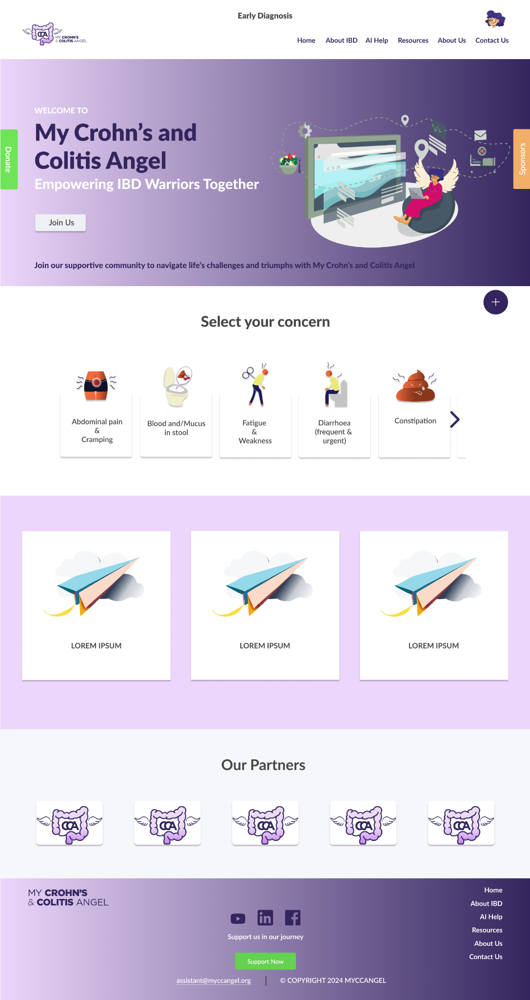

Building products where AI meets real-world problems.
I bring together product strategy, AI, data analytics and technology to turn complex problems into useful products.
Background across computer engineering, an MBA and data analytics, with experience spanning consulting, business development, business analysis and AI product management across the US, Saudi Arabia and Ireland.
Product × AI × Data
Strategy → user problems → product decisions → AI → measurable value
A hybrid product & technology background.
I am an AI Product Lead with a multidisciplinary background spanning technology, business and data.
My work sits between the user problem and the technology needed to solve it. I enjoy defining product strategy, understanding users, translating ideas into requirements, working with technical teams, and getting hands-on with AI and data when it creates meaningful product value.
My experience has taken me across consulting, business development, business analysis and AI product development in the US, Saudi Arabia and Ireland.
MyCCAngel
An AI-powered healthcare community platform for people living with Crohn's disease and ulcerative colitis.

Building an AI companion for people living with IBD.
I led MyCCAngel from product discovery and strategy through UX, AI feature development, requirements, database design and cross-functional delivery.
Turning data into decisions.
Interactive analytics projects demonstrating data exploration, visualization and business storytelling.
Diabetes Health Dashboard
Interactive analysis of 253K+ BRFSS health survey responses, comparing diabetes, prediabetes and no-diabetes populations.
Explore dashboard → TABLEAU · BUSINESS ANALYTICSYouTube Channel Analysis
Five interactive visualizations exploring subscribers, earnings, country trends, channel performance and upload patterns.
Explore analysis →Technical projects.
What I work with.
Product
Product Strategy · Discovery · User Research · Roadmapping · MVP Strategy · PRDs · Requirements · Prioritization
AI & Data
Machine Learning · Python · SQL · NLP · SVM · Recommendation Systems · Data Analytics
Design & Delivery
UX Collaboration · Figma · User Flows · Agile · Cross-functional Leadership · QA
Technology
PostgreSQL · Flask · Tableau · OCR · Scikit-learn · TensorFlow
Business + technology + analytics.
Interested in building meaningful AI products?
I'm always interested in conversations around AI product strategy, healthcare technology, data and emerging products.